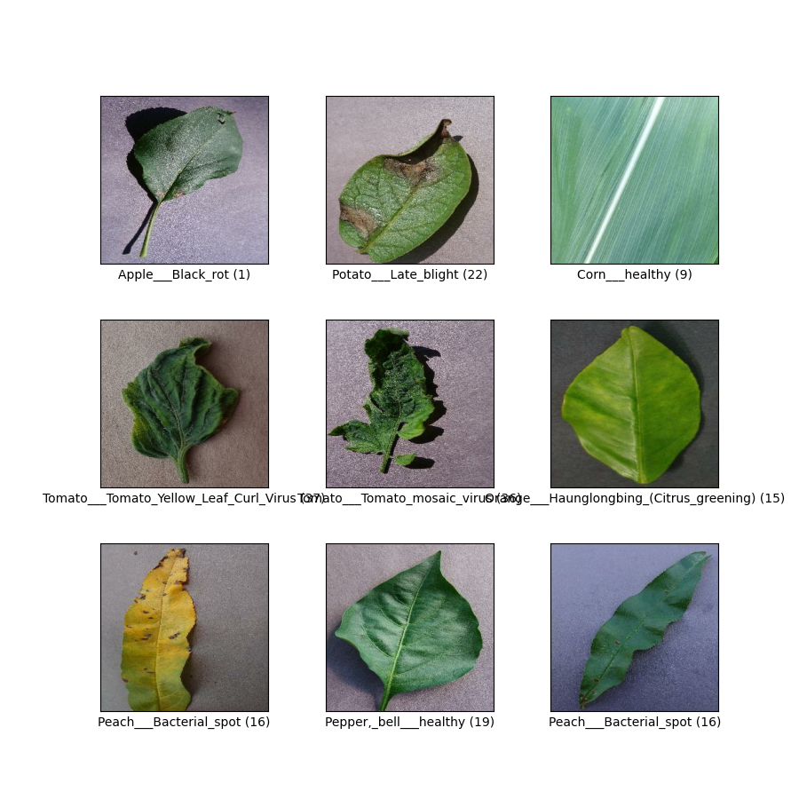

<!DOCTYPE html>
<html class="writer-html5" lang="en" >
<head>
  <meta charset="utf-8" /><meta name="generator" content="Docutils 0.17.1: http://docutils.sourceforge.net/" />

  <meta name="viewport" content="width=device-width, initial-scale=1.0" />
  <title>Transfer learning with AkidaNet for cats vs. dogs &mdash; Akida Examples  documentation</title>
      <link rel="stylesheet" href="../../_static/pygments.css" type="text/css" />
      <link rel="stylesheet" href="../../_static/css/theme.css" type="text/css" />
      <link rel="stylesheet" href="../../_static/sg_gallery.css" type="text/css" />
      <link rel="stylesheet" href="../../_static/sg_gallery-binder.css" type="text/css" />
      <link rel="stylesheet" href="../../_static/sg_gallery-dataframe.css" type="text/css" />
      <link rel="stylesheet" href="../../_static/sg_gallery-rendered-html.css" type="text/css" />
      <link rel="stylesheet" href="../../_static/custom.css" type="text/css" />
    <link rel="shortcut icon" href="../../_static/favicon.ico"/>
  <!--[if lt IE 9]>
    <script src="../../_static/js/html5shiv.min.js"></script>
  <![endif]-->
  
        <script data-url_root="../../" id="documentation_options" src="../../_static/documentation_options.js"></script>
        <script src="../../_static/jquery.js"></script>
        <script src="../../_static/underscore.js"></script>
        <script src="../../_static/doctools.js"></script>
    <script src="../../_static/js/theme.js"></script>
    <link rel="index" title="Index" href="../../genindex.html" />
    <link rel="search" title="Search" href="../../search.html" />
    <link rel="next" title="YOLO/PASCAL-VOC detection tutorial" href="plot_6_voc_yolo_detection.html" />
    <link rel="prev" title="Regression tutorial" href="plot_4_regression.html" /> 
</head>

<body class="wy-body-for-nav"> 
  <div class="wy-grid-for-nav">
    <nav data-toggle="wy-nav-shift" class="wy-nav-side">
      <div class="wy-side-scroll">
        <div class="wy-side-nav-search"  style="background: #78b3ff" >
            <a href="../../index.html">
            
          </a>
              <div class="version">
                MetaTF 2.1.1
              </div>
<div role="search">
  <form id="rtd-search-form" class="wy-form" action="../../search.html" method="get">
    <input type="text" name="q" placeholder="Search docs" />
    <input type="hidden" name="check_keywords" value="yes" />
    <input type="hidden" name="area" value="default" />
  </form>
</div>
        </div><div class="wy-menu wy-menu-vertical" data-spy="affix" role="navigation" aria-label="Navigation menu">
              <ul class="current">
<li class="toctree-l1"><a class="reference internal" href="../../index.html">Overview</a></li>
<li class="toctree-l1"><a class="reference internal" href="../../installation.html">Installation</a><ul>
<li class="toctree-l2"><a class="reference internal" href="../../installation.html#requirements">Requirements</a></li>
<li class="toctree-l2"><a class="reference internal" href="../../installation.html#quick-installation">Quick installation</a></li>
<li class="toctree-l2"><a class="reference internal" href="../../installation.html#running-examples">Running examples</a></li>
</ul>
</li>
<li class="toctree-l1"><a class="reference internal" href="../../user_guide/user_guide.html">User guide</a><ul>
<li class="toctree-l2"><a class="reference internal" href="../../user_guide/getting_started.html">Getting started</a><ul>
<li class="toctree-l3"><a class="reference internal" href="../../user_guide/getting_started.html#for-beginners">For beginners</a></li>
<li class="toctree-l3"><a class="reference internal" href="../../user_guide/getting_started.html#for-users-familiar-with-deep-learning">For users familiar with deep-learning</a></li>
</ul>
</li>
<li class="toctree-l2"><a class="reference internal" href="../../user_guide/akida.html">Akida user guide</a><ul>
<li class="toctree-l3"><a class="reference internal" href="../../user_guide/akida.html#introduction">Introduction</a><ul>
<li class="toctree-l4"><a class="reference internal" href="../../user_guide/akida.html#akida-layers">Akida layers</a></li>
<li class="toctree-l4"><a class="reference internal" href="../../user_guide/akida.html#input-format">Input Format</a></li>
<li class="toctree-l4"><a class="reference internal" href="../../user_guide/akida.html#a-versatile-machine-learning-framework">A versatile machine learning framework</a></li>
</ul>
</li>
<li class="toctree-l3"><a class="reference internal" href="../../user_guide/akida.html#the-sequential-model">The Sequential model</a><ul>
<li class="toctree-l4"><a class="reference internal" href="../../user_guide/akida.html#specifying-the-model">Specifying the model</a></li>
<li class="toctree-l4"><a class="reference internal" href="../../user_guide/akida.html#accessing-layer-parameters-and-weights">Accessing layer parameters and weights</a></li>
<li class="toctree-l4"><a class="reference internal" href="../../user_guide/akida.html#inference">Inference</a></li>
<li class="toctree-l4"><a class="reference internal" href="../../user_guide/akida.html#saving-and-loading">Saving and loading</a></li>
<li class="toctree-l4"><a class="reference internal" href="../../user_guide/akida.html#input-layer-types">Input layer types</a></li>
<li class="toctree-l4"><a class="reference internal" href="../../user_guide/akida.html#data-processing-layer-types">Data-Processing layer types</a></li>
</ul>
</li>
<li class="toctree-l3"><a class="reference internal" href="../../user_guide/akida.html#model-hardware-mapping">Model Hardware Mapping</a><ul>
<li class="toctree-l4"><a class="reference internal" href="../../user_guide/akida.html#devices">Devices</a></li>
<li class="toctree-l4"><a class="reference internal" href="../../user_guide/akida.html#model-mapping">Model mapping</a></li>
<li class="toctree-l4"><a class="reference internal" href="../../user_guide/akida.html#advanced-mapping-details-and-hardware-devices-usage">Advanced Mapping Details and Hardware Devices Usage</a></li>
<li class="toctree-l4"><a class="reference internal" href="../../user_guide/akida.html#performances-measurement">Performances measurement</a></li>
</ul>
</li>
<li class="toctree-l3"><a class="reference internal" href="../../user_guide/akida.html#id1">Using Akida Edge learning</a><ul>
<li class="toctree-l4"><a class="reference internal" href="../../user_guide/akida.html#learning-constraints">Learning constraints</a></li>
<li class="toctree-l4"><a class="reference internal" href="../../user_guide/akida.html#compiling-a-layer">Compiling a layer</a></li>
</ul>
</li>
</ul>
</li>
<li class="toctree-l2"><a class="reference internal" href="../../user_guide/cnn2snn.html">CNN2SNN toolkit</a><ul>
<li class="toctree-l3"><a class="reference internal" href="../../user_guide/cnn2snn.html#overview">Overview</a><ul>
<li class="toctree-l4"><a class="reference internal" href="../../user_guide/cnn2snn.html#conversion-workflow">Conversion workflow</a></li>
<li class="toctree-l4"><a class="reference internal" href="../../user_guide/cnn2snn.html#typical-training-scenario">Typical training scenario</a></li>
<li class="toctree-l4"><a class="reference internal" href="../../user_guide/cnn2snn.html#design-compatibility-constraints">Design compatibility constraints</a></li>
<li class="toctree-l4"><a class="reference internal" href="../../user_guide/cnn2snn.html#quantization-compatibility-constraints">Quantization compatibility constraints</a></li>
<li class="toctree-l4"><a class="reference internal" href="../../user_guide/cnn2snn.html#command-line-interface">Command-line interface</a></li>
</ul>
</li>
<li class="toctree-l3"><a class="reference internal" href="../../user_guide/cnn2snn.html#layers-considerations">Layers Considerations</a><ul>
<li class="toctree-l4"><a class="reference internal" href="../../user_guide/cnn2snn.html#supported-layer-types">Supported layer types</a></li>
<li class="toctree-l4"><a class="reference internal" href="../../user_guide/cnn2snn.html#cnn2snn-quantization-aware-layers">CNN2SNN Quantization-aware layers</a></li>
<li class="toctree-l4"><a class="reference internal" href="../../user_guide/cnn2snn.html#training-only-layers">Training-Only Layers</a></li>
<li class="toctree-l4"><a class="reference internal" href="../../user_guide/cnn2snn.html#first-layers">First Layers</a></li>
<li class="toctree-l4"><a class="reference internal" href="../../user_guide/cnn2snn.html#id6">Final Layers</a></li>
</ul>
</li>
<li class="toctree-l3"><a class="reference internal" href="../../user_guide/cnn2snn.html#tips-and-tricks">Tips and Tricks</a></li>
</ul>
</li>
<li class="toctree-l2"><a class="reference internal" href="../../user_guide/akida_models.html">Akida models zoo</a><ul>
<li class="toctree-l3"><a class="reference internal" href="../../user_guide/akida_models.html#overview">Overview</a></li>
<li class="toctree-l3"><a class="reference internal" href="../../user_guide/akida_models.html#command-line-interface-for-model-creation">Command-line interface for model creation</a></li>
<li class="toctree-l3"><a class="reference internal" href="../../user_guide/akida_models.html#command-line-interface-for-model-training">Command-line interface for model training</a><ul>
<li class="toctree-l4"><a class="reference internal" href="../../user_guide/akida_models.html#cifar10-training-and-tuning">CIFAR10 training and tuning</a></li>
<li class="toctree-l4"><a class="reference internal" href="../../user_guide/akida_models.html#utk-face-training">UTK Face training</a></li>
<li class="toctree-l4"><a class="reference internal" href="../../user_guide/akida_models.html#kws-training">KWS training</a></li>
<li class="toctree-l4"><a class="reference internal" href="../../user_guide/akida_models.html#yolo-training">YOLO training</a></li>
</ul>
</li>
<li class="toctree-l3"><a class="reference internal" href="../../user_guide/akida_models.html#command-line-interface-for-model-evaluation">Command-line interface for model evaluation</a></li>
<li class="toctree-l3"><a class="reference internal" href="../../user_guide/akida_models.html#id1">Layer Blocks</a><ul>
<li class="toctree-l4"><a class="reference internal" href="../../user_guide/akida_models.html#conv-block"><code class="docutils literal notranslate"><span class="pre">conv_block</span></code></a></li>
<li class="toctree-l4"><a class="reference internal" href="../../user_guide/akida_models.html#dense-block"><code class="docutils literal notranslate"><span class="pre">dense_block</span></code></a></li>
<li class="toctree-l4"><a class="reference internal" href="../../user_guide/akida_models.html#separable-conv-block"><code class="docutils literal notranslate"><span class="pre">separable_conv_block</span></code></a></li>
</ul>
</li>
</ul>
</li>
<li class="toctree-l2"><a class="reference internal" href="../../user_guide/hw_constraints.html">Hardware constraints</a><ul>
<li class="toctree-l3"><a class="reference internal" href="../../user_guide/hw_constraints.html#inputconvolutional">InputConvolutional</a></li>
<li class="toctree-l3"><a class="reference internal" href="../../user_guide/hw_constraints.html#convolutional">Convolutional</a></li>
<li class="toctree-l3"><a class="reference internal" href="../../user_guide/hw_constraints.html#separableconvolutional">SeparableConvolutional</a></li>
<li class="toctree-l3"><a class="reference internal" href="../../user_guide/hw_constraints.html#fullyconnected">FullyConnected</a></li>
</ul>
</li>
<li class="toctree-l2"><a class="reference internal" href="../../user_guide/compatibility.html">Akida versions compatibility</a><ul>
<li class="toctree-l3"><a class="reference internal" href="../../user_guide/compatibility.html#upgrading-models-with-legacy-quantizers">Upgrading models with legacy quantizers</a></li>
</ul>
</li>
</ul>
</li>
<li class="toctree-l1"><a class="reference internal" href="../../api_reference/api_reference.html">API reference</a><ul>
<li class="toctree-l2"><a class="reference internal" href="../../api_reference/akida_apis.html">Akida runtime</a><ul>
<li class="toctree-l3"><a class="reference internal" href="../../api_reference/akida_apis.html#model">Model</a></li>
<li class="toctree-l3"><a class="reference internal" href="../../api_reference/akida_apis.html#layer">Layer</a><ul>
<li class="toctree-l4"><a class="reference internal" href="../../api_reference/akida_apis.html#id1">Layer</a></li>
<li class="toctree-l4"><a class="reference internal" href="../../api_reference/akida_apis.html#mapping">Mapping</a></li>
</ul>
</li>
<li class="toctree-l3"><a class="reference internal" href="../../api_reference/akida_apis.html#inputdata">InputData</a></li>
<li class="toctree-l3"><a class="reference internal" href="../../api_reference/akida_apis.html#inputconvolutional">InputConvolutional</a></li>
<li class="toctree-l3"><a class="reference internal" href="../../api_reference/akida_apis.html#fullyconnected">FullyConnected</a></li>
<li class="toctree-l3"><a class="reference internal" href="../../api_reference/akida_apis.html#convolutional">Convolutional</a></li>
<li class="toctree-l3"><a class="reference internal" href="../../api_reference/akida_apis.html#separableconvolutional">SeparableConvolutional</a></li>
<li class="toctree-l3"><a class="reference internal" href="../../api_reference/akida_apis.html#concat">Concat</a></li>
<li class="toctree-l3"><a class="reference internal" href="../../api_reference/akida_apis.html#layer-parameters">Layer parameters</a><ul>
<li class="toctree-l4"><a class="reference internal" href="../../api_reference/akida_apis.html#layertype">LayerType</a></li>
<li class="toctree-l4"><a class="reference internal" href="../../api_reference/akida_apis.html#padding">Padding</a></li>
<li class="toctree-l4"><a class="reference internal" href="../../api_reference/akida_apis.html#pooltype">PoolType</a></li>
<li class="toctree-l4"><a class="reference internal" href="../../api_reference/akida_apis.html#learningtype">LearningType</a></li>
</ul>
</li>
<li class="toctree-l3"><a class="reference internal" href="../../api_reference/akida_apis.html#sequence">Sequence</a><ul>
<li class="toctree-l4"><a class="reference internal" href="../../api_reference/akida_apis.html#id2">Sequence</a></li>
<li class="toctree-l4"><a class="reference internal" href="../../api_reference/akida_apis.html#backendtype">BackendType</a></li>
<li class="toctree-l4"><a class="reference internal" href="../../api_reference/akida_apis.html#pass">Pass</a></li>
</ul>
</li>
<li class="toctree-l3"><a class="reference internal" href="../../api_reference/akida_apis.html#device">Device</a><ul>
<li class="toctree-l4"><a class="reference internal" href="../../api_reference/akida_apis.html#id3">Device</a></li>
<li class="toctree-l4"><a class="reference internal" href="../../api_reference/akida_apis.html#hwversion">HwVersion</a></li>
</ul>
</li>
<li class="toctree-l3"><a class="reference internal" href="../../api_reference/akida_apis.html#hwdevice">HWDevice</a><ul>
<li class="toctree-l4"><a class="reference internal" href="../../api_reference/akida_apis.html#id4">HWDevice</a></li>
<li class="toctree-l4"><a class="reference internal" href="../../api_reference/akida_apis.html#socdriver">SocDriver</a></li>
<li class="toctree-l4"><a class="reference internal" href="../../api_reference/akida_apis.html#clockmode">ClockMode</a></li>
</ul>
</li>
<li class="toctree-l3"><a class="reference internal" href="../../api_reference/akida_apis.html#powermeter">PowerMeter</a></li>
<li class="toctree-l3"><a class="reference internal" href="../../api_reference/akida_apis.html#np">NP</a></li>
<li class="toctree-l3"><a class="reference internal" href="../../api_reference/akida_apis.html#tools">Tools</a><ul>
<li class="toctree-l4"><a class="reference internal" href="../../api_reference/akida_apis.html#sparsity">Sparsity</a></li>
<li class="toctree-l4"><a class="reference internal" href="../../api_reference/akida_apis.html#compatibility">Compatibility</a></li>
</ul>
</li>
</ul>
</li>
<li class="toctree-l2"><a class="reference internal" href="../../api_reference/cnn2snn_apis.html">CNN2SNN</a><ul>
<li class="toctree-l3"><a class="reference internal" href="../../api_reference/cnn2snn_apis.html#tool-functions">Tool functions</a><ul>
<li class="toctree-l4"><a class="reference internal" href="../../api_reference/cnn2snn_apis.html#quantize">quantize</a></li>
<li class="toctree-l4"><a class="reference internal" href="../../api_reference/cnn2snn_apis.html#quantize-layer">quantize_layer</a></li>
<li class="toctree-l4"><a class="reference internal" href="../../api_reference/cnn2snn_apis.html#convert">convert</a></li>
<li class="toctree-l4"><a class="reference internal" href="../../api_reference/cnn2snn_apis.html#check-model-compatibility">check_model_compatibility</a></li>
<li class="toctree-l4"><a class="reference internal" href="../../api_reference/cnn2snn_apis.html#load-quantized-model">load_quantized_model</a></li>
</ul>
</li>
<li class="toctree-l3"><a class="reference internal" href="../../api_reference/cnn2snn_apis.html#quantizers">Quantizers</a><ul>
<li class="toctree-l4"><a class="reference internal" href="../../api_reference/cnn2snn_apis.html#weightquantizer">WeightQuantizer</a></li>
<li class="toctree-l4"><a class="reference internal" href="../../api_reference/cnn2snn_apis.html#linearweightquantizer">LinearWeightQuantizer</a></li>
<li class="toctree-l4"><a class="reference internal" href="../../api_reference/cnn2snn_apis.html#stdweightquantizer">StdWeightQuantizer</a></li>
<li class="toctree-l4"><a class="reference internal" href="../../api_reference/cnn2snn_apis.html#stdperaxisquantizer">StdPerAxisQuantizer</a></li>
<li class="toctree-l4"><a class="reference internal" href="../../api_reference/cnn2snn_apis.html#maxquantizer">MaxQuantizer</a></li>
<li class="toctree-l4"><a class="reference internal" href="../../api_reference/cnn2snn_apis.html#maxperaxisquantizer">MaxPerAxisQuantizer</a></li>
</ul>
</li>
<li class="toctree-l3"><a class="reference internal" href="../../api_reference/cnn2snn_apis.html#quantized-layers">Quantized layers</a><ul>
<li class="toctree-l4"><a class="reference internal" href="../../api_reference/cnn2snn_apis.html#quantizedconv2d">QuantizedConv2D</a></li>
<li class="toctree-l4"><a class="reference internal" href="../../api_reference/cnn2snn_apis.html#quantizeddense">QuantizedDense</a></li>
<li class="toctree-l4"><a class="reference internal" href="../../api_reference/cnn2snn_apis.html#quantizedseparableconv2d">QuantizedSeparableConv2D</a></li>
<li class="toctree-l4"><a class="reference internal" href="../../api_reference/cnn2snn_apis.html#quantizedactivation">QuantizedActivation</a></li>
<li class="toctree-l4"><a class="reference internal" href="../../api_reference/cnn2snn_apis.html#activationdiscreterelu">ActivationDiscreteRelu</a></li>
<li class="toctree-l4"><a class="reference internal" href="../../api_reference/cnn2snn_apis.html#quantizedrelu">QuantizedReLU</a></li>
</ul>
</li>
</ul>
</li>
<li class="toctree-l2"><a class="reference internal" href="../../api_reference/akida_models_apis.html">Akida models</a><ul>
<li class="toctree-l3"><a class="reference internal" href="../../api_reference/akida_models_apis.html#layer-blocks">Layer blocks</a><ul>
<li class="toctree-l4"><a class="reference internal" href="../../api_reference/akida_models_apis.html#conv-block">conv_block</a></li>
<li class="toctree-l4"><a class="reference internal" href="../../api_reference/akida_models_apis.html#separable-conv-block">separable_conv_block</a></li>
<li class="toctree-l4"><a class="reference internal" href="../../api_reference/akida_models_apis.html#dense-block">dense_block</a></li>
</ul>
</li>
<li class="toctree-l3"><a class="reference internal" href="../../api_reference/akida_models_apis.html#helpers">Helpers</a><ul>
<li class="toctree-l4"><a class="reference internal" href="../../api_reference/akida_models_apis.html#batchnormalization-gamma-constraint">BatchNormalization gamma constraint</a></li>
</ul>
</li>
<li class="toctree-l3"><a class="reference internal" href="../../api_reference/akida_models_apis.html#knowledge-distillation">Knowledge distillation</a></li>
<li class="toctree-l3"><a class="reference internal" href="../../api_reference/akida_models_apis.html#pruning">Pruning</a></li>
<li class="toctree-l3"><a class="reference internal" href="../../api_reference/akida_models_apis.html#model-zoo">Model zoo</a><ul>
<li class="toctree-l4"><a class="reference internal" href="../../api_reference/akida_models_apis.html#akidanet">AkidaNet</a></li>
<li class="toctree-l4"><a class="reference internal" href="../../api_reference/akida_models_apis.html#mobilenet">Mobilenet</a></li>
<li class="toctree-l4"><a class="reference internal" href="../../api_reference/akida_models_apis.html#ds-cnn">DS-CNN</a></li>
<li class="toctree-l4"><a class="reference internal" href="../../api_reference/akida_models_apis.html#vgg">VGG</a></li>
<li class="toctree-l4"><a class="reference internal" href="../../api_reference/akida_models_apis.html#yolo">YOLO</a></li>
<li class="toctree-l4"><a class="reference internal" href="../../api_reference/akida_models_apis.html#convtiny">ConvTiny</a></li>
<li class="toctree-l4"><a class="reference internal" href="../../api_reference/akida_models_apis.html#pointnet">PointNet++</a></li>
<li class="toctree-l4"><a class="reference internal" href="../../api_reference/akida_models_apis.html#gxnor">GXNOR</a></li>
</ul>
</li>
</ul>
</li>
</ul>
</li>
<li class="toctree-l1 current"><a class="reference internal" href="../index.html">Examples</a><ul class="current">
<li class="toctree-l2 current"><a class="reference internal" href="../index.html#general-examples">General examples</a><ul class="current">
<li class="toctree-l3"><a class="reference internal" href="plot_0_gxnor_mnist.html">GXNOR/MNIST inference</a><ul>
<li class="toctree-l4"><a class="reference internal" href="plot_0_gxnor_mnist.html#dataset-preparation">1. Dataset preparation</a></li>
<li class="toctree-l4"><a class="reference internal" href="plot_0_gxnor_mnist.html#create-a-keras-gxnor-model">2. Create a Keras GXNOR model</a></li>
<li class="toctree-l4"><a class="reference internal" href="plot_0_gxnor_mnist.html#conversion-to-akida">3. Conversion to Akida</a></li>
</ul>
</li>
<li class="toctree-l3"><a class="reference internal" href="plot_1_ds_cnn_cifar10.html">DS-CNN CIFAR10 inference</a><ul>
<li class="toctree-l4"><a class="reference internal" href="plot_1_ds_cnn_cifar10.html#dataset-preparation">1. Dataset preparation</a></li>
<li class="toctree-l4"><a class="reference internal" href="plot_1_ds_cnn_cifar10.html#create-a-keras-ds-cnn-model">2. Create a Keras DS-CNN model</a></li>
<li class="toctree-l4"><a class="reference internal" href="plot_1_ds_cnn_cifar10.html#quantized-model">3. Quantized model</a></li>
<li class="toctree-l4"><a class="reference internal" href="plot_1_ds_cnn_cifar10.html#pretrained-quantized-model">4. Pretrained quantized model</a></li>
<li class="toctree-l4"><a class="reference internal" href="plot_1_ds_cnn_cifar10.html#conversion-to-akida">5. Conversion to Akida</a></li>
</ul>
</li>
<li class="toctree-l3"><a class="reference internal" href="plot_2_akidanet_imagenet.html">AkidaNet/ImageNet inference</a><ul>
<li class="toctree-l4"><a class="reference internal" href="plot_2_akidanet_imagenet.html#dataset-preparation">1. Dataset preparation</a></li>
<li class="toctree-l4"><a class="reference internal" href="plot_2_akidanet_imagenet.html#create-a-keras-akidanet-model">2. Create a Keras AkidaNet model</a></li>
<li class="toctree-l4"><a class="reference internal" href="plot_2_akidanet_imagenet.html#quantized-model">3. Quantized model</a></li>
<li class="toctree-l4"><a class="reference internal" href="plot_2_akidanet_imagenet.html#pretrained-quantized-model">4. Pretrained quantized model</a></li>
<li class="toctree-l4"><a class="reference internal" href="plot_2_akidanet_imagenet.html#conversion-to-akida">5. Conversion to Akida</a></li>
<li class="toctree-l4"><a class="reference internal" href="plot_2_akidanet_imagenet.html#hardware-mapping-and-performance">6. Hardware mapping and performance</a></li>
</ul>
</li>
<li class="toctree-l3"><a class="reference internal" href="plot_3_ds_cnn_kws.html">DS-CNN/KWS inference</a><ul>
<li class="toctree-l4"><a class="reference internal" href="plot_3_ds_cnn_kws.html#load-the-preprocessed-dataset">1. Load the preprocessed dataset</a></li>
<li class="toctree-l4"><a class="reference internal" href="plot_3_ds_cnn_kws.html#load-a-pre-trained-native-keras-model">2. Load a pre-trained native Keras model</a></li>
<li class="toctree-l4"><a class="reference internal" href="plot_3_ds_cnn_kws.html#load-a-pre-trained-quantized-keras-model-satisfying-akida-nsoc-requirements">3. Load a pre-trained quantized Keras model satisfying Akida NSoC requirements</a></li>
<li class="toctree-l4"><a class="reference internal" href="plot_3_ds_cnn_kws.html#conversion-to-akida">4. Conversion to Akida</a></li>
<li class="toctree-l4"><a class="reference internal" href="plot_3_ds_cnn_kws.html#confusion-matrix">5. Confusion matrix</a></li>
</ul>
</li>
<li class="toctree-l3"><a class="reference internal" href="plot_4_regression.html">Regression tutorial</a><ul>
<li class="toctree-l4"><a class="reference internal" href="plot_4_regression.html#load-the-dataset">1. Load the dataset</a></li>
<li class="toctree-l4"><a class="reference internal" href="plot_4_regression.html#load-a-pre-trained-native-keras-model">2. Load a pre-trained native Keras model</a></li>
<li class="toctree-l4"><a class="reference internal" href="plot_4_regression.html#load-a-pre-trained-quantized-keras-model-satisfying-akida-nsoc-requirements">3. Load a pre-trained quantized Keras model satisfying Akida NSoC requirements</a></li>
<li class="toctree-l4"><a class="reference internal" href="plot_4_regression.html#conversion-to-akida">4. Conversion to Akida</a></li>
<li class="toctree-l4"><a class="reference internal" href="plot_4_regression.html#estimate-age-on-a-single-image">5. Estimate age on a single image</a></li>
</ul>
</li>
<li class="toctree-l3 current"><a class="current reference internal" href="#">Transfer learning with AkidaNet for cats vs. dogs</a><ul>
<li class="toctree-l4"><a class="reference internal" href="#transfer-learning-process">Transfer learning process</a></li>
<li class="toctree-l4"><a class="reference internal" href="#load-and-preprocess-data">1. Load and preprocess data</a></li>
<li class="toctree-l4"><a class="reference internal" href="#modify-a-pre-trained-base-keras-model">2. Modify a pre-trained base Keras model</a></li>
<li class="toctree-l4"><a class="reference internal" href="#train-the-transferred-model-for-the-new-task">3. Train the transferred model for the new task</a></li>
<li class="toctree-l4"><a class="reference internal" href="#quantize-the-top-layer">4. Quantize the top layer</a></li>
<li class="toctree-l4"><a class="reference internal" href="#convert-to-akida">5. Convert to Akida</a></li>
<li class="toctree-l4"><a class="reference internal" href="#plot-confusion-matrix">6. Plot confusion matrix</a></li>
</ul>
</li>
<li class="toctree-l3"><a class="reference internal" href="plot_6_voc_yolo_detection.html">YOLO/PASCAL-VOC detection tutorial</a><ul>
<li class="toctree-l4"><a class="reference internal" href="plot_6_voc_yolo_detection.html#introduction">1. Introduction</a></li>
<li class="toctree-l4"><a class="reference internal" href="plot_6_voc_yolo_detection.html#preprocessing-tools">2. Preprocessing tools</a></li>
<li class="toctree-l4"><a class="reference internal" href="plot_6_voc_yolo_detection.html#model-architecture">3. Model architecture</a></li>
<li class="toctree-l4"><a class="reference internal" href="plot_6_voc_yolo_detection.html#training">4. Training</a></li>
<li class="toctree-l4"><a class="reference internal" href="plot_6_voc_yolo_detection.html#performance">5. Performance</a></li>
<li class="toctree-l4"><a class="reference internal" href="plot_6_voc_yolo_detection.html#conversion-to-akida">6. Conversion to Akida</a></li>
</ul>
</li>
</ul>
</li>
<li class="toctree-l2"><a class="reference internal" href="../index.html#cnn2snn-tutorials">CNN2SNN tutorials</a><ul>
<li class="toctree-l3"><a class="reference internal" href="../cnn2snn/plot_0_cnn_flow.html">CNN conversion flow tutorial</a><ul>
<li class="toctree-l4"><a class="reference internal" href="../cnn2snn/plot_0_cnn_flow.html#load-and-reshape-mnist-dataset">1. Load and reshape MNIST dataset</a></li>
<li class="toctree-l4"><a class="reference internal" href="../cnn2snn/plot_0_cnn_flow.html#model-definition">2. Model definition</a></li>
<li class="toctree-l4"><a class="reference internal" href="../cnn2snn/plot_0_cnn_flow.html#model-training">3. Model training</a></li>
<li class="toctree-l4"><a class="reference internal" href="../cnn2snn/plot_0_cnn_flow.html#model-quantization">4. Model quantization</a></li>
<li class="toctree-l4"><a class="reference internal" href="../cnn2snn/plot_0_cnn_flow.html#model-fine-tuning-quantization-aware-training">5. Model fine tuning (quantization-aware training)</a></li>
<li class="toctree-l4"><a class="reference internal" href="../cnn2snn/plot_0_cnn_flow.html#model-conversion">6. Model conversion</a></li>
</ul>
</li>
<li class="toctree-l3"><a class="reference internal" href="../cnn2snn/plot_1_advanced_cnn2snn.html">Advanced CNN2SNN tutorial</a><ul>
<li class="toctree-l4"><a class="reference internal" href="../cnn2snn/plot_1_advanced_cnn2snn.html#design-a-cnn2snn-quantized-model">1. Design a CNN2SNN quantized model</a></li>
<li class="toctree-l4"><a class="reference internal" href="../cnn2snn/plot_1_advanced_cnn2snn.html#weight-quantizer-details">2. Weight Quantizer Details</a></li>
<li class="toctree-l4"><a class="reference internal" href="../cnn2snn/plot_1_advanced_cnn2snn.html#quantized-activation-layer-details">3. Quantized Activation Layer Details</a></li>
<li class="toctree-l4"><a class="reference internal" href="../cnn2snn/plot_1_advanced_cnn2snn.html#how-to-deal-with-too-high-scale-factors">4. How to deal with too high scale factors</a></li>
</ul>
</li>
</ul>
</li>
<li class="toctree-l2"><a class="reference internal" href="../index.html#edge-examples">Edge examples</a><ul>
<li class="toctree-l3"><a class="reference internal" href="../edge/plot_0_edge_learning_vision.html">Akida vision edge learning</a><ul>
<li class="toctree-l4"><a class="reference internal" href="../edge/plot_0_edge_learning_vision.html#dataset-preparation">1. Dataset preparation</a></li>
<li class="toctree-l4"><a class="reference internal" href="../edge/plot_0_edge_learning_vision.html#prepare-akida-model-for-learning">2. Prepare Akida model for learning</a></li>
<li class="toctree-l4"><a class="reference internal" href="../edge/plot_0_edge_learning_vision.html#edge-learning-with-akida">3. Edge learning with Akida</a></li>
</ul>
</li>
<li class="toctree-l3"><a class="reference internal" href="../edge/plot_1_edge_learning_kws.html">Akida edge learning for keyword spotting</a><ul>
<li class="toctree-l4"><a class="reference internal" href="../edge/plot_1_edge_learning_kws.html#edge-learning-process">1. Edge learning process</a></li>
<li class="toctree-l4"><a class="reference internal" href="../edge/plot_1_edge_learning_kws.html#dataset-preparation">2. Dataset preparation</a></li>
<li class="toctree-l4"><a class="reference internal" href="../edge/plot_1_edge_learning_kws.html#prepare-akida-model-for-learning">3. Prepare Akida model for learning</a></li>
<li class="toctree-l4"><a class="reference internal" href="../edge/plot_1_edge_learning_kws.html#learn-with-akida-using-the-training-set">4. Learn with Akida using the training set</a></li>
<li class="toctree-l4"><a class="reference internal" href="../edge/plot_1_edge_learning_kws.html#edge-learning">5. Edge learning</a></li>
</ul>
</li>
<li class="toctree-l3"><a class="reference internal" href="../edge/plot_2_edge_learning_parameters.html">Tips to set Akida learning parameters</a><ul>
<li class="toctree-l4"><a class="reference internal" href="../edge/plot_2_edge_learning_parameters.html#akida-learning-parameters">1. Akida learning parameters</a></li>
<li class="toctree-l4"><a class="reference internal" href="../edge/plot_2_edge_learning_parameters.html#create-akida-model">2. Create Akida model</a></li>
<li class="toctree-l4"><a class="reference internal" href="../edge/plot_2_edge_learning_parameters.html#estimate-the-required-number-of-weights-of-the-trainable-layer">3. Estimate the required number of weights of the trainable layer</a></li>
<li class="toctree-l4"><a class="reference internal" href="../edge/plot_2_edge_learning_parameters.html#estimate-the-number-of-neurons-per-class">4. Estimate the number of neurons per class</a></li>
</ul>
</li>
</ul>
</li>
</ul>
</li>
<li class="toctree-l1"><a class="reference internal" href="../../zoo_performances.html">Model zoo performances</a><ul>
<li class="toctree-l2"><a class="reference internal" href="../../zoo_performances.html#image-icon-ref-image-domain"> Image domain</a><ul>
<li class="toctree-l3"><a class="reference internal" href="../../zoo_performances.html#classification">Classification</a></li>
<li class="toctree-l3"><a class="reference internal" href="../../zoo_performances.html#object-detection">Object detection</a></li>
<li class="toctree-l3"><a class="reference internal" href="../../zoo_performances.html#regression">Regression</a></li>
<li class="toctree-l3"><a class="reference internal" href="../../zoo_performances.html#face-recognition">Face recognition</a></li>
</ul>
</li>
<li class="toctree-l2"><a class="reference internal" href="../../zoo_performances.html#audio-icon-ref-audio-domain"> Audio domain</a><ul>
<li class="toctree-l3"><a class="reference internal" href="../../zoo_performances.html#keyword-spotting">Keyword spotting</a></li>
</ul>
</li>
<li class="toctree-l2"><a class="reference internal" href="../../zoo_performances.html#time-icon-ref-time-domain"> Time domain</a><ul>
<li class="toctree-l3"><a class="reference internal" href="../../zoo_performances.html#fault-detection">Fault detection</a></li>
<li class="toctree-l3"><a class="reference internal" href="../../zoo_performances.html#id1">Classification</a></li>
</ul>
</li>
<li class="toctree-l2"><a class="reference internal" href="../../zoo_performances.html#pointcloud-icon-ref-point-cloud"> Point cloud</a><ul>
<li class="toctree-l3"><a class="reference internal" href="../../zoo_performances.html#id2">Classification</a></li>
</ul>
</li>
</ul>
</li>
<li class="toctree-l1"><a class="reference external" href="https://github.com/Brainchip-Inc/akida_examples/releases">Changelog</a></li>
<li class="toctree-l1"><a class="reference external" href="https://support.brainchip.com/portal/home">Support</a></li>
<li class="toctree-l1"><a class="reference internal" href="../../license.html">License</a></li>
</ul>

        </div>
      </div>
    </nav>

    <section data-toggle="wy-nav-shift" class="wy-nav-content-wrap"><nav class="wy-nav-top" aria-label="Mobile navigation menu"  style="background: #78b3ff" >
          <i data-toggle="wy-nav-top" class="fa fa-bars"></i>
          <a href="../../index.html">Akida Examples</a>
      </nav>

      <div class="wy-nav-content">
        <div class="rst-content">
          <div role="navigation" aria-label="Page navigation">
  <ul class="wy-breadcrumbs">
      <li><a href="../../index.html" class="icon icon-home"></a> &raquo;</li>
          <li><a href="../index.html">Akida examples</a> &raquo;</li>
      <li>Transfer learning with AkidaNet for cats vs. dogs</li>
      <li class="wy-breadcrumbs-aside">
      </li>
  </ul>
  <hr/>
</div>
          <div role="main" class="document" itemscope="itemscope" itemtype="http://schema.org/Article">
           <div itemprop="articleBody">
             
  <div class="sphx-glr-download-link-note admonition note">
<p class="admonition-title">Note</p>
<p>Click <a class="reference internal" href="#sphx-glr-download-examples-general-plot-5-transfer-learning-py"><span class="std std-ref">here</span></a>
to download the full example code</p>
</div>
<section class="sphx-glr-example-title" id="transfer-learning-with-akidanet-for-cats-vs-dogs">
<span id="sphx-glr-examples-general-plot-5-transfer-learning-py"></span><h1>Transfer learning with AkidaNet for cats vs. dogs<a class="headerlink" href="#transfer-learning-with-akidanet-for-cats-vs-dogs" title="Permalink to this headline"></a></h1>
<p>This tutorial presents a demonstration of how transfer learning is applied
with our quantized models to get an Akida model.</p>
<p>The transfer learning example is derived from the <a class="reference external" href="https://www.tensorflow.org/tutorials/images/transfer_learning">Tensorflow
tutorial</a>:</p>
<blockquote>
<div><ul class="simple">
<li><p>Our base model is AkidaNet (inspired from MobileNet v1) trained on
ImageNet.</p></li>
<li><p>The new dataset for transfer learning is <strong>cats vs. dogs</strong>
(<a class="reference external" href="https://www.tensorflow.org/datasets/catalog/cats_vs_dogs">link</a>).</p></li>
<li><p>We use transfer learning to customize the model to the new task of
classifying cats and dogs.</p></li>
</ul>
</div></blockquote>
<div class="admonition note">
<p class="admonition-title">Note</p>
<p>This tutorial only shows the inference of the trained Keras
model and its conversion to an Akida network. A textual explanation
of the training is given below.</p>
</div>
<section id="transfer-learning-process">
<h2>Transfer learning process<a class="headerlink" href="#transfer-learning-process" title="Permalink to this headline"></a></h2>
<figure class="align-center">
<a class="reference external image-reference" href="https://s2.qwant.com/thumbr/0x380/7/0/7b7386531ea24ab1294fdf9b8698b008a51e38a3c57e81427fbef626ff226c/1*6ACbDsBMeDZcLg9W8CFT_Q.png?u=https%3A%2F%2Fcdn-images-1.medium.com%2Fmax%2F1600%2F1%2A6ACbDsBMeDZcLg9W8CFT_Q.png&amp;q=0&amp;b=1&amp;p=0&amp;a=1"></a>
</figure>
<p>Transfer learning allows to classify on a specific task by using a
pre-trained base model. For an introduction to transfer learning, please
refer to the <a class="reference external" href="https://www.tensorflow.org/tutorials/images/transfer_learning">Tensorflow transfer learning
tutorial</a>
before exploring this tutorial. Here, we focus on how to quantize the
Keras model in order to convert it to an Akida one.</p>
<p>The model is composed of:</p>
<blockquote>
<div><ul class="simple">
<li><p>a base quantized AkidaNet model used to extract image features</p></li>
<li><p>a top layer to classify cats and dogs</p></li>
<li><p>a sigmoid activation function to interpret model outputs as a probability</p></li>
</ul>
</div></blockquote>
<p><strong>Base model</strong></p>
<p>The base model is a quantized version of AkidaNet. This model was trained and
quantized using the ImageNet dataset. Please refer to the corresponding
<a class="reference external" href="plot_2_akidanet_imagenet.html">example</a> for more information.
The layers have 4-bit weights (except for the first layer having 8-bit
weights) and the activations are quantized to 4 bits.
This base model ends with a classification layer for 1000 classes. To
classify cats and dogs, the feature extractor is preserved but the
classification layer must be removed to be replaced by a new top layer
focusing on the new task.</p>
<p>In our transfer learning process, the base model is frozen, i.e., the
weights are not updated during training. Pre-trained weights for the
frozen quantized model are provided on our
<a class="reference external" href="http://data.brainchip.com/models/akidanet/">data server</a>.</p>
<p><strong>Top layer</strong></p>
<p>While a fully-connected top layer is added in the Tensorflow tutorial, we
decided to use a separable convolutional layer with one output neuron for the
top layer of our model.</p>
<p><strong>Training process</strong></p>
<p>The transfer learning process for quantized models can be handled in different
ways:</p>
<blockquote>
<div><ol class="arabic simple">
<li><p><strong>From a quantized base model</strong>, the new transferred model is composed
of a frozen base model and a float top layer. The top layer is trained.
Then, the top layer is quantized and fine-tuned. If necessary, the base
model can be unfrozen to be slightly trained to improve accuracy.</p></li>
<li><p><strong>From a float base model</strong>, the new transferred model is also composed
of a frozen base model (with float weights/activations) and a float top
layer. The top layer is trained. Then the full model is quantized,
unfrozen and fine-tuned. This option requires longer training
operations since we don’t take advantage of an already quantized base
model. Option 2 can be used alternatively if option 1 doesn’t give
suitable performance.</p></li>
</ol>
</div></blockquote>
<p>In this example, option 1 is chosen. The training steps are described below.</p>
</section>
<section id="load-and-preprocess-data">
<h2>1. Load and preprocess data<a class="headerlink" href="#load-and-preprocess-data" title="Permalink to this headline"></a></h2>
<p>In this section, we will load and preprocess the ‘cats_vs_dogs’ dataset
to match the required model’s inputs.</p>
<section id="a-load-and-split-data">
<h3>1.A - Load and split data<a class="headerlink" href="#a-load-and-split-data" title="Permalink to this headline"></a></h3>
<p>The <code class="docutils literal notranslate"><span class="pre">cats_vs_dogs</span></code>
<a class="reference external" href="https://www.tensorflow.org/datasets/catalog/cats_vs_dogs">dataset</a>
is loaded and split into train, validation and test sets. The train and
validation sets were used for the transfer learning process. Here only
the test set is used. We use here <code class="docutils literal notranslate"><span class="pre">tf.Dataset</span></code> objects to load and
preprocess batches of data (one can look at the TensorFlow guide
<a class="reference external" href="https://www.tensorflow.org/guide/data">here</a> for more information).</p>
<div class="admonition note">
<p class="admonition-title">Note</p>
<p>The <code class="docutils literal notranslate"><span class="pre">cats_vs_dogs</span></code> dataset version used here is 4.0.0.</p>
</div>
<div class="highlight-default notranslate"><div class="highlight"><pre><span></span><span class="kn">import</span> <span class="nn">tensorflow_datasets</span> <span class="k">as</span> <span class="nn">tfds</span>

<span class="n">tfds</span><span class="o">.</span><span class="n">disable_progress_bar</span><span class="p">()</span>
<span class="p">(</span><span class="n">raw_train</span><span class="p">,</span> <span class="n">raw_validation</span><span class="p">,</span> <span class="n">raw_test</span><span class="p">),</span> <span class="n">metadata</span> <span class="o">=</span> <span class="n">tfds</span><span class="o">.</span><span class="n">load</span><span class="p">(</span>
    <span class="s1">&#39;cats_vs_dogs&#39;</span><span class="p">,</span>
    <span class="n">split</span><span class="o">=</span><span class="p">[</span><span class="s1">&#39;train[:80%]&#39;</span><span class="p">,</span> <span class="s1">&#39;train[80%:90%]&#39;</span><span class="p">,</span> <span class="s1">&#39;train[90%:]&#39;</span><span class="p">],</span>
    <span class="n">with_info</span><span class="o">=</span><span class="kc">True</span><span class="p">,</span>
    <span class="n">as_supervised</span><span class="o">=</span><span class="kc">True</span><span class="p">)</span>
</pre></div>
</div>
<p class="sphx-glr-script-out">Out:</p>
<div class="sphx-glr-script-out highlight-none notranslate"><div class="highlight"><pre><span></span>Downloading and preparing dataset 786.68 MiB (download: 786.68 MiB, generated: Unknown size, total: 786.68 MiB) to /root/tensorflow_datasets/cats_vs_dogs/4.0.0...
WARNING:absl:1738 images were corrupted and were skipped
Dataset cats_vs_dogs downloaded and prepared to /root/tensorflow_datasets/cats_vs_dogs/4.0.0. Subsequent calls will reuse this data.
</pre></div>
</div>
</section>
<section id="b-preprocess-the-test-set">
<h3>1.B - Preprocess the test set<a class="headerlink" href="#b-preprocess-the-test-set" title="Permalink to this headline"></a></h3>
<p>We must apply preprocessing for training: rescaling and resizing. While
rescaling between 0 and 1 in done by a rescaling layer in the model, resizing
is done in a preprocesing step.</p>
<p>Keras and Akida models require 4-dimensional (N,H,W,C) arrays as inputs.
We must then create batches of images to feed the model. For inference,
the batch size is not relevant; you can set it such that the batch of
images can be loaded in memory depending on your CPU/GPU.</p>
<div class="highlight-default notranslate"><div class="highlight"><pre><span></span><span class="kn">import</span> <span class="nn">tensorflow</span> <span class="k">as</span> <span class="nn">tf</span>

<span class="n">IMG_SIZE</span> <span class="o">=</span> <span class="mi">160</span>


<span class="k">def</span> <span class="nf">format_example</span><span class="p">(</span><span class="n">image</span><span class="p">,</span> <span class="n">label</span><span class="p">):</span>
    <span class="n">image</span> <span class="o">=</span> <span class="n">tf</span><span class="o">.</span><span class="n">cast</span><span class="p">(</span><span class="n">image</span><span class="p">,</span> <span class="n">tf</span><span class="o">.</span><span class="n">float32</span><span class="p">)</span>
    <span class="n">image</span> <span class="o">=</span> <span class="n">tf</span><span class="o">.</span><span class="n">image</span><span class="o">.</span><span class="n">resize</span><span class="p">(</span><span class="n">image</span><span class="p">,</span> <span class="p">(</span><span class="n">IMG_SIZE</span><span class="p">,</span> <span class="n">IMG_SIZE</span><span class="p">))</span>
    <span class="k">return</span> <span class="n">image</span><span class="p">,</span> <span class="n">label</span>
</pre></div>
</div>
<div class="highlight-default notranslate"><div class="highlight"><pre><span></span><span class="n">BATCH_SIZE</span> <span class="o">=</span> <span class="mi">32</span>
<span class="n">test_batches</span> <span class="o">=</span> <span class="n">raw_test</span><span class="o">.</span><span class="n">map</span><span class="p">(</span><span class="n">format_example</span><span class="p">)</span><span class="o">.</span><span class="n">batch</span><span class="p">(</span><span class="n">BATCH_SIZE</span><span class="p">)</span>
</pre></div>
</div>
</section>
<section id="c-get-labels">
<h3>1.C - Get labels<a class="headerlink" href="#c-get-labels" title="Permalink to this headline"></a></h3>
<p>Labels are contained in the test set as ‘0’ for cats and ‘1’ for dogs.
We read through the batches to extract the labels.</p>
<div class="highlight-default notranslate"><div class="highlight"><pre><span></span><span class="kn">import</span> <span class="nn">numpy</span> <span class="k">as</span> <span class="nn">np</span>

<span class="n">labels</span> <span class="o">=</span> <span class="n">np</span><span class="o">.</span><span class="n">array</span><span class="p">([])</span>
<span class="k">for</span> <span class="n">_</span><span class="p">,</span> <span class="n">label_batch</span> <span class="ow">in</span> <span class="n">test_batches</span><span class="p">:</span>
    <span class="n">labels</span> <span class="o">=</span> <span class="n">np</span><span class="o">.</span><span class="n">concatenate</span><span class="p">((</span><span class="n">labels</span><span class="p">,</span> <span class="n">label_batch</span><span class="p">))</span>

<span class="n">num_images</span> <span class="o">=</span> <span class="n">labels</span><span class="o">.</span><span class="n">shape</span><span class="p">[</span><span class="mi">0</span><span class="p">]</span>

<span class="nb">print</span><span class="p">(</span><span class="sa">f</span><span class="s2">&quot;Test set composed of </span><span class="si">{</span><span class="n">num_images</span><span class="si">}</span><span class="s2"> images: &quot;</span>
      <span class="sa">f</span><span class="s2">&quot;</span><span class="si">{</span><span class="n">np</span><span class="o">.</span><span class="n">count_nonzero</span><span class="p">(</span><span class="n">labels</span><span class="o">==</span><span class="mi">0</span><span class="p">)</span><span class="si">}</span><span class="s2"> cats and &quot;</span>
      <span class="sa">f</span><span class="s2">&quot;</span><span class="si">{</span><span class="n">np</span><span class="o">.</span><span class="n">count_nonzero</span><span class="p">(</span><span class="n">labels</span><span class="o">==</span><span class="mi">1</span><span class="p">)</span><span class="si">}</span><span class="s2"> dogs.&quot;</span><span class="p">)</span>
</pre></div>
</div>
<p class="sphx-glr-script-out">Out:</p>
<div class="sphx-glr-script-out highlight-none notranslate"><div class="highlight"><pre><span></span>Test set composed of 2326 images: 1160 cats and 1166 dogs.
</pre></div>
</div>
</section>
</section>
<section id="modify-a-pre-trained-base-keras-model">
<h2>2. Modify a pre-trained base Keras model<a class="headerlink" href="#modify-a-pre-trained-base-keras-model" title="Permalink to this headline"></a></h2>
<p>In this section, we will describe how to modify a base model to specify
the classification for <code class="docutils literal notranslate"><span class="pre">cats_vs_dogs</span></code>.</p>
<section id="a-instantiate-a-keras-base-model">
<h3>2.A - Instantiate a Keras base model<a class="headerlink" href="#a-instantiate-a-keras-base-model" title="Permalink to this headline"></a></h3>
<p>Here, we instantiate a quantized Keras model based on an AkidaNet model.
This base model was previously trained using the 1000 classes of the
ImageNet dataset. For more information, please see the <a class="reference external" href="plot_2_akidanet_imagenet.html">AkidaNet/ImageNet
tutorial</a>.</p>
<p>The quantized AkidaNet model satisfies the Akida NSoC requirements:</p>
<blockquote>
<div><ul class="simple">
<li><p>The model relies on a convolutional layer (first layer) and separable
convolutional layers, all being Akida-compatible.</p></li>
<li><p>All the separable convolutional layers have 4-bit weights, the first
convolutional layer has 8-bit weights.</p></li>
<li><p>The activations are quantized with 4 bits.</p></li>
</ul>
</div></blockquote>
<div class="highlight-default notranslate"><div class="highlight"><pre><span></span><span class="kn">from</span> <span class="nn">akida_models</span> <span class="kn">import</span> <span class="n">akidanet_imagenet</span>

<span class="c1"># Instantiate a quantized AkidaNet model</span>
<span class="n">base_model_keras</span> <span class="o">=</span> <span class="n">akidanet_imagenet</span><span class="p">(</span><span class="n">input_shape</span><span class="o">=</span><span class="p">(</span><span class="n">IMG_SIZE</span><span class="p">,</span> <span class="n">IMG_SIZE</span><span class="p">,</span> <span class="mi">3</span><span class="p">),</span>
                                     <span class="n">weight_quantization</span><span class="o">=</span><span class="mi">4</span><span class="p">,</span>
                                     <span class="n">activ_quantization</span><span class="o">=</span><span class="mi">4</span><span class="p">,</span>
                                     <span class="n">input_weight_quantization</span><span class="o">=</span><span class="mi">8</span><span class="p">,</span>
                                     <span class="n">alpha</span><span class="o">=</span><span class="mf">0.5</span><span class="p">)</span>

<span class="c1"># Load pre-trained weights for the base model</span>
<span class="n">pretrained_weights</span> <span class="o">=</span> <span class="n">tf</span><span class="o">.</span><span class="n">keras</span><span class="o">.</span><span class="n">utils</span><span class="o">.</span><span class="n">get_file</span><span class="p">(</span>
    <span class="s2">&quot;akidanet_imagenet_160_alpha_50_iq8_wq4_aq4.h5&quot;</span><span class="p">,</span>
    <span class="s2">&quot;http://data.brainchip.com/models/akidanet/akidanet_imagenet_160_alpha_50_iq8_wq4_aq4.h5&quot;</span><span class="p">,</span>
    <span class="n">cache_subdir</span><span class="o">=</span><span class="s1">&#39;models/akidanet_imagenet&#39;</span><span class="p">)</span>
<span class="n">base_model_keras</span><span class="o">.</span><span class="n">load_weights</span><span class="p">(</span><span class="n">pretrained_weights</span><span class="p">)</span>

<span class="n">base_model_keras</span><span class="o">.</span><span class="n">summary</span><span class="p">()</span>
</pre></div>
</div>
<p class="sphx-glr-script-out">Out:</p>
<div class="sphx-glr-script-out highlight-none notranslate"><div class="highlight"><pre><span></span>Downloading data from http://data.brainchip.com/models/akidanet/akidanet_imagenet_160_alpha_50_iq8_wq4_aq4.h5

  16384/5613320 [..............................] - ETA: 4s
 204800/5613320 [&gt;.............................] - ETA: 1s
 466944/5613320 [=&gt;............................] - ETA: 1s
 729088/5613320 [==&gt;...........................] - ETA: 1s
 991232/5613320 [====&gt;.........................] - ETA: 1s
1253376/5613320 [=====&gt;........................] - ETA: 1s
1515520/5613320 [=======&gt;......................] - ETA: 0s
1777664/5613320 [========&gt;.....................] - ETA: 0s
2039808/5613320 [=========&gt;....................] - ETA: 0s
2301952/5613320 [===========&gt;..................] - ETA: 0s
2564096/5613320 [============&gt;.................] - ETA: 0s
2826240/5613320 [==============&gt;...............] - ETA: 0s
3088384/5613320 [===============&gt;..............] - ETA: 0s
3350528/5613320 [================&gt;.............] - ETA: 0s
3612672/5613320 [==================&gt;...........] - ETA: 0s
3874816/5613320 [===================&gt;..........] - ETA: 0s
4136960/5613320 [=====================&gt;........] - ETA: 0s
4399104/5613320 [======================&gt;.......] - ETA: 0s
4661248/5613320 [=======================&gt;......] - ETA: 0s
4923392/5613320 [=========================&gt;....] - ETA: 0s
5185536/5613320 [==========================&gt;...] - ETA: 0s
5447680/5613320 [============================&gt;.] - ETA: 0s
5619712/5613320 [==============================] - 1s 0us/step

5627904/5613320 [==============================] - 1s 0us/step
Model: &quot;sequential_33&quot;
_________________________________________________________________
Layer (type)                 Output Shape              Param #
=================================================================
rescaling (Rescaling)        (None, 160, 160, 3)       0
_________________________________________________________________
conv_0 (QuantizedConv2D)     (None, 80, 80, 16)        448
_________________________________________________________________
conv_0_relu (ActivationDiscr (None, 80, 80, 16)        0
_________________________________________________________________
conv_1 (QuantizedConv2D)     (None, 80, 80, 32)        4640
_________________________________________________________________
conv_1_relu (ActivationDiscr (None, 80, 80, 32)        0
_________________________________________________________________
conv_2 (QuantizedConv2D)     (None, 40, 40, 64)        18496
_________________________________________________________________
conv_2_relu (ActivationDiscr (None, 40, 40, 64)        0
_________________________________________________________________
conv_3 (QuantizedConv2D)     (None, 40, 40, 64)        36928
_________________________________________________________________
conv_3_relu (ActivationDiscr (None, 40, 40, 64)        0
_________________________________________________________________
separable_4 (QuantizedSepara (None, 20, 20, 128)       8896
_________________________________________________________________
separable_4_relu (Activation (None, 20, 20, 128)       0
_________________________________________________________________
separable_5 (QuantizedSepara (None, 20, 20, 128)       17664
_________________________________________________________________
separable_5_relu (Activation (None, 20, 20, 128)       0
_________________________________________________________________
separable_6 (QuantizedSepara (None, 10, 10, 256)       34176
_________________________________________________________________
separable_6_relu (Activation (None, 10, 10, 256)       0
_________________________________________________________________
separable_7 (QuantizedSepara (None, 10, 10, 256)       68096
_________________________________________________________________
separable_7_relu (Activation (None, 10, 10, 256)       0
_________________________________________________________________
separable_8 (QuantizedSepara (None, 10, 10, 256)       68096
_________________________________________________________________
separable_8_relu (Activation (None, 10, 10, 256)       0
_________________________________________________________________
separable_9 (QuantizedSepara (None, 10, 10, 256)       68096
_________________________________________________________________
separable_9_relu (Activation (None, 10, 10, 256)       0
_________________________________________________________________
separable_10 (QuantizedSepar (None, 10, 10, 256)       68096
_________________________________________________________________
separable_10_relu (Activatio (None, 10, 10, 256)       0
_________________________________________________________________
separable_11 (QuantizedSepar (None, 10, 10, 256)       68096
_________________________________________________________________
separable_11_relu (Activatio (None, 10, 10, 256)       0
_________________________________________________________________
separable_12 (QuantizedSepar (None, 5, 5, 512)         133888
_________________________________________________________________
separable_12_relu (Activatio (None, 5, 5, 512)         0
_________________________________________________________________
separable_13 (QuantizedSepar (None, 5, 5, 512)         267264
_________________________________________________________________
separable_13_global_avg (Glo (None, 512)               0
_________________________________________________________________
separable_13_relu (Activatio (None, 512)               0
_________________________________________________________________
reshape_1 (Reshape)          (None, 1, 1, 512)         0
_________________________________________________________________
dropout (Dropout)            (None, 1, 1, 512)         0
_________________________________________________________________
separable_14 (QuantizedSepar (None, 1, 1, 1000)        516608
_________________________________________________________________
act_softmax (Activation)     (None, 1, 1, 1000)        0
_________________________________________________________________
reshape_2 (Reshape)          (None, 1000)              0
=================================================================
Total params: 1,379,488
Trainable params: 1,379,488
Non-trainable params: 0
_________________________________________________________________
</pre></div>
</div>
</section>
<section id="b-modify-the-network-for-the-new-task">
<h3>2.B - Modify the network for the new task<a class="headerlink" href="#b-modify-the-network-for-the-new-task" title="Permalink to this headline"></a></h3>
<p>As explained in <a class="reference external" href="#transfer-learning-process">section 1</a>,
we replace the 1000-class top layer with a separable convolutional layer with
one output neuron.
The new model is now appropriate for the <code class="docutils literal notranslate"><span class="pre">cats_vs_dogs</span></code> dataset and is
Akida-compatible. Note that a sigmoid activation is added at the end of
the model: the output neuron returns a probability between 0 and 1 that
the input image is a dog.</p>
<div class="highlight-default notranslate"><div class="highlight"><pre><span></span><span class="kn">from</span> <span class="nn">akida_models.layer_blocks</span> <span class="kn">import</span> <span class="n">separable_conv_block</span>

<span class="c1"># Add a top layer for &quot;cats_vs_dogs&quot; classification</span>
<span class="n">x</span> <span class="o">=</span> <span class="n">base_model_keras</span><span class="o">.</span><span class="n">get_layer</span><span class="p">(</span><span class="s1">&#39;reshape_1&#39;</span><span class="p">)</span><span class="o">.</span><span class="n">output</span>
<span class="n">x</span> <span class="o">=</span> <span class="n">separable_conv_block</span><span class="p">(</span><span class="n">x</span><span class="p">,</span>
                         <span class="n">filters</span><span class="o">=</span><span class="mi">1</span><span class="p">,</span>
                         <span class="n">kernel_size</span><span class="o">=</span><span class="p">(</span><span class="mi">3</span><span class="p">,</span> <span class="mi">3</span><span class="p">),</span>
                         <span class="n">padding</span><span class="o">=</span><span class="s1">&#39;same&#39;</span><span class="p">,</span>
                         <span class="n">use_bias</span><span class="o">=</span><span class="kc">False</span><span class="p">,</span>
                         <span class="n">add_activation</span><span class="o">=</span><span class="kc">False</span><span class="p">,</span>
                         <span class="n">name</span><span class="o">=</span><span class="s1">&#39;top_layer_separable&#39;</span><span class="p">)</span>
<span class="n">x</span> <span class="o">=</span> <span class="n">tf</span><span class="o">.</span><span class="n">keras</span><span class="o">.</span><span class="n">layers</span><span class="o">.</span><span class="n">Activation</span><span class="p">(</span><span class="s1">&#39;sigmoid&#39;</span><span class="p">)(</span><span class="n">x</span><span class="p">)</span>
<span class="n">preds</span> <span class="o">=</span> <span class="n">tf</span><span class="o">.</span><span class="n">keras</span><span class="o">.</span><span class="n">layers</span><span class="o">.</span><span class="n">Reshape</span><span class="p">((</span><span class="mi">1</span><span class="p">,),</span> <span class="n">name</span><span class="o">=</span><span class="s1">&#39;reshape_2&#39;</span><span class="p">)(</span><span class="n">x</span><span class="p">)</span>
<span class="n">model_keras</span> <span class="o">=</span> <span class="n">tf</span><span class="o">.</span><span class="n">keras</span><span class="o">.</span><span class="n">Model</span><span class="p">(</span><span class="n">inputs</span><span class="o">=</span><span class="n">base_model_keras</span><span class="o">.</span><span class="n">input</span><span class="p">,</span>
                             <span class="n">outputs</span><span class="o">=</span><span class="n">preds</span><span class="p">,</span>
                             <span class="n">name</span><span class="o">=</span><span class="s2">&quot;model_cats_vs_dogs&quot;</span><span class="p">)</span>

<span class="n">model_keras</span><span class="o">.</span><span class="n">summary</span><span class="p">()</span>
</pre></div>
</div>
<p class="sphx-glr-script-out">Out:</p>
<div class="sphx-glr-script-out highlight-none notranslate"><div class="highlight"><pre><span></span>Model: &quot;model_cats_vs_dogs&quot;
_________________________________________________________________
Layer (type)                 Output Shape              Param #
=================================================================
input_27 (InputLayer)        [(None, 160, 160, 3)]     0
_________________________________________________________________
rescaling (Rescaling)        (None, 160, 160, 3)       0
_________________________________________________________________
conv_0 (QuantizedConv2D)     (None, 80, 80, 16)        448
_________________________________________________________________
conv_0_relu (ActivationDiscr (None, 80, 80, 16)        0
_________________________________________________________________
conv_1 (QuantizedConv2D)     (None, 80, 80, 32)        4640
_________________________________________________________________
conv_1_relu (ActivationDiscr (None, 80, 80, 32)        0
_________________________________________________________________
conv_2 (QuantizedConv2D)     (None, 40, 40, 64)        18496
_________________________________________________________________
conv_2_relu (ActivationDiscr (None, 40, 40, 64)        0
_________________________________________________________________
conv_3 (QuantizedConv2D)     (None, 40, 40, 64)        36928
_________________________________________________________________
conv_3_relu (ActivationDiscr (None, 40, 40, 64)        0
_________________________________________________________________
separable_4 (QuantizedSepara (None, 20, 20, 128)       8896
_________________________________________________________________
separable_4_relu (Activation (None, 20, 20, 128)       0
_________________________________________________________________
separable_5 (QuantizedSepara (None, 20, 20, 128)       17664
_________________________________________________________________
separable_5_relu (Activation (None, 20, 20, 128)       0
_________________________________________________________________
separable_6 (QuantizedSepara (None, 10, 10, 256)       34176
_________________________________________________________________
separable_6_relu (Activation (None, 10, 10, 256)       0
_________________________________________________________________
separable_7 (QuantizedSepara (None, 10, 10, 256)       68096
_________________________________________________________________
separable_7_relu (Activation (None, 10, 10, 256)       0
_________________________________________________________________
separable_8 (QuantizedSepara (None, 10, 10, 256)       68096
_________________________________________________________________
separable_8_relu (Activation (None, 10, 10, 256)       0
_________________________________________________________________
separable_9 (QuantizedSepara (None, 10, 10, 256)       68096
_________________________________________________________________
separable_9_relu (Activation (None, 10, 10, 256)       0
_________________________________________________________________
separable_10 (QuantizedSepar (None, 10, 10, 256)       68096
_________________________________________________________________
separable_10_relu (Activatio (None, 10, 10, 256)       0
_________________________________________________________________
separable_11 (QuantizedSepar (None, 10, 10, 256)       68096
_________________________________________________________________
separable_11_relu (Activatio (None, 10, 10, 256)       0
_________________________________________________________________
separable_12 (QuantizedSepar (None, 5, 5, 512)         133888
_________________________________________________________________
separable_12_relu (Activatio (None, 5, 5, 512)         0
_________________________________________________________________
separable_13 (QuantizedSepar (None, 5, 5, 512)         267264
_________________________________________________________________
separable_13_global_avg (Glo (None, 512)               0
_________________________________________________________________
separable_13_relu (Activatio (None, 512)               0
_________________________________________________________________
reshape_1 (Reshape)          (None, 1, 1, 512)         0
_________________________________________________________________
top_layer_separable (Separab (None, 1, 1, 1)           5120
_________________________________________________________________
activation (Activation)      (None, 1, 1, 1)           0
_________________________________________________________________
reshape_2 (Reshape)          (None, 1)                 0
=================================================================
Total params: 868,000
Trainable params: 868,000
Non-trainable params: 0
_________________________________________________________________
</pre></div>
</div>
</section>
</section>
<section id="train-the-transferred-model-for-the-new-task">
<h2>3. Train the transferred model for the new task<a class="headerlink" href="#train-the-transferred-model-for-the-new-task" title="Permalink to this headline"></a></h2>
<p>The transferred model must be trained to learn how to classify cats and dogs.
The quantized base model is frozen: only the float top layer will effectively
be trained. One can take a look at the
<a class="reference external" href="https://www.tensorflow.org/tutorials/images/transfer_learning#compile_the_model">training section</a>
of the corresponding TensorFlow tutorial to reproduce the training stage.</p>
<p>The float top layer is trained for 20 epochs. We don’t illustrate the training
phase in this tutorial; instead we directly load the pre-trained weights
obtained after the 20 epochs.</p>
<div class="highlight-default notranslate"><div class="highlight"><pre><span></span><span class="c1"># Freeze the base model part of the new model</span>
<span class="n">base_model_keras</span><span class="o">.</span><span class="n">trainable</span> <span class="o">=</span> <span class="kc">False</span>

<span class="c1"># Load model with pretrained weights</span>
<span class="kn">from</span> <span class="nn">akida_models</span> <span class="kn">import</span> <span class="n">akidanet_cats_vs_dogs_pretrained</span>

<span class="n">model_keras</span> <span class="o">=</span> <span class="n">akidanet_cats_vs_dogs_pretrained</span><span class="p">()</span>
</pre></div>
</div>
<p class="sphx-glr-script-out">Out:</p>
<div class="sphx-glr-script-out highlight-none notranslate"><div class="highlight"><pre><span></span>Downloading data from http://data.brainchip.com/models/akidanet/akidanet_cats_vs_dogs_iq8_wq4_aq4_lwq_float.h5

  16384/3565248 [..............................] - ETA: 2s
 204800/3565248 [&gt;.............................] - ETA: 1s
 466944/3565248 [==&gt;...........................] - ETA: 0s
 729088/3565248 [=====&gt;........................] - ETA: 0s
 991232/3565248 [=======&gt;......................] - ETA: 0s
1253376/3565248 [=========&gt;....................] - ETA: 0s
1515520/3565248 [===========&gt;..................] - ETA: 0s
1777664/3565248 [=============&gt;................] - ETA: 0s
2039808/3565248 [================&gt;.............] - ETA: 0s
2301952/3565248 [==================&gt;...........] - ETA: 0s
2564096/3565248 [====================&gt;.........] - ETA: 0s
2826240/3565248 [======================&gt;.......] - ETA: 0s
3088384/3565248 [========================&gt;.....] - ETA: 0s
3350528/3565248 [===========================&gt;..] - ETA: 0s
3571712/3565248 [==============================] - 1s 0us/step

3579904/3565248 [==============================] - 1s 0us/step
WARNING:tensorflow:No training configuration found in the save file, so the model was *not* compiled. Compile it manually.
</pre></div>
</div>
<div class="highlight-default notranslate"><div class="highlight"><pre><span></span><span class="c1"># Check performance on the test set</span>
<span class="n">model_keras</span><span class="o">.</span><span class="n">compile</span><span class="p">(</span><span class="n">metrics</span><span class="o">=</span><span class="p">[</span><span class="s1">&#39;accuracy&#39;</span><span class="p">])</span>
<span class="n">_</span><span class="p">,</span> <span class="n">keras_accuracy</span> <span class="o">=</span> <span class="n">model_keras</span><span class="o">.</span><span class="n">evaluate</span><span class="p">(</span><span class="n">test_batches</span><span class="p">)</span>

<span class="nb">print</span><span class="p">(</span><span class="sa">f</span><span class="s2">&quot;Keras accuracy (float top layer): </span><span class="si">{</span><span class="n">keras_accuracy</span><span class="o">*</span><span class="mi">100</span><span class="si">:</span><span class="s2">.2f</span><span class="si">}</span><span class="s2"> %&quot;</span><span class="p">)</span>
</pre></div>
</div>
<p class="sphx-glr-script-out">Out:</p>
<div class="sphx-glr-script-out highlight-none notranslate"><div class="highlight"><pre><span></span> 1/73 [..............................] - ETA: 1:16 - loss: 0.4583 - accuracy: 0.9688
 5/73 [=&gt;............................] - ETA: 0s - loss: 0.4583 - accuracy: 0.9750  
 9/73 [==&gt;...........................] - ETA: 0s - loss: 0.4583 - accuracy: 0.9618
13/73 [====&gt;.........................] - ETA: 0s - loss: 0.4583 - accuracy: 0.9615
17/73 [=====&gt;........................] - ETA: 0s - loss: 0.4583 - accuracy: 0.9669
21/73 [=======&gt;......................] - ETA: 0s - loss: 0.4583 - accuracy: 0.9628
25/73 [=========&gt;....................] - ETA: 0s - loss: 0.4583 - accuracy: 0.9588
29/73 [==========&gt;...................] - ETA: 0s - loss: 0.4583 - accuracy: 0.9612
33/73 [============&gt;.................] - ETA: 0s - loss: 0.4583 - accuracy: 0.9612
38/73 [==============&gt;...............] - ETA: 0s - loss: 0.4583 - accuracy: 0.9646
43/73 [================&gt;.............] - ETA: 0s - loss: 0.4583 - accuracy: 0.9644
48/73 [==================&gt;...........] - ETA: 0s - loss: 0.4583 - accuracy: 0.9629
52/73 [====================&gt;.........] - ETA: 0s - loss: 0.4583 - accuracy: 0.9639
56/73 [======================&gt;.......] - ETA: 0s - loss: 0.4583 - accuracy: 0.9632
61/73 [========================&gt;.....] - ETA: 0s - loss: 0.4583 - accuracy: 0.9616
65/73 [=========================&gt;....] - ETA: 0s - loss: 0.4583 - accuracy: 0.9615
70/73 [===========================&gt;..] - ETA: 0s - loss: 0.4583 - accuracy: 0.9621
73/73 [==============================] - ETA: 0s - loss: 0.4583 - accuracy: 0.9635
73/73 [==============================] - 2s 14ms/step - loss: 0.4583 - accuracy: 0.9635
Keras accuracy (float top layer): 96.35 %
</pre></div>
</div>
</section>
<section id="quantize-the-top-layer">
<h2>4. Quantize the top layer<a class="headerlink" href="#quantize-the-top-layer" title="Permalink to this headline"></a></h2>
<p>To get an Akida-compatible model, the float top layer must be quantized.
We decide to quantize its weights to 4 bits. The performance of the
new quantized model is then assessed.</p>
<p>Here, the quantized model gives suitable performance compared to the model
with the float top layer. If that had not been the case, a fine-tuning step
would have been necessary to recover the drop in accuracy.</p>
<div class="highlight-default notranslate"><div class="highlight"><pre><span></span><span class="kn">from</span> <span class="nn">cnn2snn</span> <span class="kn">import</span> <span class="n">quantize_layer</span>

<span class="c1"># Quantize the top layer to 4 bits</span>
<span class="n">model_keras</span> <span class="o">=</span> <span class="n">quantize_layer</span><span class="p">(</span><span class="n">model_keras</span><span class="p">,</span> <span class="s1">&#39;top_layer_separable&#39;</span><span class="p">,</span> <span class="n">bitwidth</span><span class="o">=</span><span class="mi">4</span><span class="p">)</span>

<span class="c1"># Check performance for the quantized Keras model</span>
<span class="n">model_keras</span><span class="o">.</span><span class="n">compile</span><span class="p">(</span><span class="n">metrics</span><span class="o">=</span><span class="p">[</span><span class="s1">&#39;accuracy&#39;</span><span class="p">])</span>
<span class="n">_</span><span class="p">,</span> <span class="n">keras_accuracy</span> <span class="o">=</span> <span class="n">model_keras</span><span class="o">.</span><span class="n">evaluate</span><span class="p">(</span><span class="n">test_batches</span><span class="p">)</span>

<span class="nb">print</span><span class="p">(</span><span class="sa">f</span><span class="s2">&quot;Quantized Keras accuracy: </span><span class="si">{</span><span class="n">keras_accuracy</span><span class="o">*</span><span class="mi">100</span><span class="si">:</span><span class="s2">.2f</span><span class="si">}</span><span class="s2"> %&quot;</span><span class="p">)</span>
</pre></div>
</div>
<p class="sphx-glr-script-out">Out:</p>
<div class="sphx-glr-script-out highlight-none notranslate"><div class="highlight"><pre><span></span> 1/73 [..............................] - ETA: 1:08 - loss: 0.4583 - accuracy: 0.9688
 5/73 [=&gt;............................] - ETA: 0s - loss: 0.4583 - accuracy: 0.9625  
 9/73 [==&gt;...........................] - ETA: 0s - loss: 0.4583 - accuracy: 0.9549
13/73 [====&gt;.........................] - ETA: 0s - loss: 0.4583 - accuracy: 0.9567
17/73 [=====&gt;........................] - ETA: 0s - loss: 0.4583 - accuracy: 0.9651
21/73 [=======&gt;......................] - ETA: 0s - loss: 0.4583 - accuracy: 0.9628
25/73 [=========&gt;....................] - ETA: 0s - loss: 0.4583 - accuracy: 0.9588
29/73 [==========&gt;...................] - ETA: 0s - loss: 0.4583 - accuracy: 0.9612
33/73 [============&gt;.................] - ETA: 0s - loss: 0.4583 - accuracy: 0.9612
37/73 [==============&gt;...............] - ETA: 0s - loss: 0.4583 - accuracy: 0.9628
41/73 [===============&gt;..............] - ETA: 0s - loss: 0.4583 - accuracy: 0.9642
45/73 [=================&gt;............] - ETA: 0s - loss: 0.4583 - accuracy: 0.9639
49/73 [===================&gt;..........] - ETA: 0s - loss: 0.4583 - accuracy: 0.9624
53/73 [====================&gt;.........] - ETA: 0s - loss: 0.4583 - accuracy: 0.9640
57/73 [======================&gt;.......] - ETA: 0s - loss: 0.4583 - accuracy: 0.9633
61/73 [========================&gt;.....] - ETA: 0s - loss: 0.4583 - accuracy: 0.9616
65/73 [=========================&gt;....] - ETA: 0s - loss: 0.4583 - accuracy: 0.9620
70/73 [===========================&gt;..] - ETA: 0s - loss: 0.4583 - accuracy: 0.9629
73/73 [==============================] - 2s 13ms/step - loss: 0.4583 - accuracy: 0.9643
Quantized Keras accuracy: 96.43 %
</pre></div>
</div>
</section>
<section id="convert-to-akida">
<h2>5. Convert to Akida<a class="headerlink" href="#convert-to-akida" title="Permalink to this headline"></a></h2>
<p>The new quantized Keras model is now converted to an Akida model. The
‘sigmoid’ final activation has no SNN equivalent and will be simply ignored
during the conversion.</p>
<p>Performance of the Akida model is then computed. Compared to Keras inference,
remember that:</p>
<blockquote>
<div><ul class="simple">
<li><p>Input images in Akida are uint8</p></li>
<li><p>The Akida <a class="reference external" href="../../api_reference/akida_apis.html#akida.Model.evaluate">evaluate</a>
function takes a NumPy array containing the images and returns potentials
before the sigmoid activation. We must therefore explicitly apply the
‘sigmoid’ activation on the model outputs to obtain the Akida
probabilities.</p></li>
</ul>
</div></blockquote>
<p>Since activations sparsity has a great impact on Akida inference time, we
also have a look at the average input and output sparsity of each layer on
one batch of the test set.</p>
<div class="highlight-default notranslate"><div class="highlight"><pre><span></span><span class="kn">from</span> <span class="nn">cnn2snn</span> <span class="kn">import</span> <span class="n">convert</span>

<span class="c1"># Convert the model</span>
<span class="n">model_akida</span> <span class="o">=</span> <span class="n">convert</span><span class="p">(</span><span class="n">model_keras</span><span class="p">)</span>
<span class="n">model_akida</span><span class="o">.</span><span class="n">summary</span><span class="p">()</span>
</pre></div>
</div>
<p class="sphx-glr-script-out">Out:</p>
<div class="sphx-glr-script-out highlight-none notranslate"><div class="highlight"><pre><span></span>                 Model Summary
________________________________________________
Input shape    Output shape  Sequences  Layers
================================================
[160, 160, 3]  [1, 1, 1]     1          15
________________________________________________

             SW/conv_0-top_layer_separable (Software)
__________________________________________________________________
Layer (type)                     Output shape   Kernel shape
==================================================================
conv_0 (InputConv.)              [80, 80, 16]   (3, 3, 3, 16)
__________________________________________________________________
conv_1 (Conv.)                   [80, 80, 32]   (3, 3, 16, 32)
__________________________________________________________________
conv_2 (Conv.)                   [40, 40, 64]   (3, 3, 32, 64)
__________________________________________________________________
conv_3 (Conv.)                   [40, 40, 64]   (3, 3, 64, 64)
__________________________________________________________________
separable_4 (Sep.Conv.)          [20, 20, 128]  (3, 3, 64, 1)
__________________________________________________________________
                                                (1, 1, 64, 128)
__________________________________________________________________
separable_5 (Sep.Conv.)          [20, 20, 128]  (3, 3, 128, 1)
__________________________________________________________________
                                                (1, 1, 128, 128)
__________________________________________________________________
separable_6 (Sep.Conv.)          [10, 10, 256]  (3, 3, 128, 1)
__________________________________________________________________
                                                (1, 1, 128, 256)
__________________________________________________________________
separable_7 (Sep.Conv.)          [10, 10, 256]  (3, 3, 256, 1)
__________________________________________________________________
                                                (1, 1, 256, 256)
__________________________________________________________________
separable_8 (Sep.Conv.)          [10, 10, 256]  (3, 3, 256, 1)
__________________________________________________________________
                                                (1, 1, 256, 256)
__________________________________________________________________
separable_9 (Sep.Conv.)          [10, 10, 256]  (3, 3, 256, 1)
__________________________________________________________________
                                                (1, 1, 256, 256)
__________________________________________________________________
separable_10 (Sep.Conv.)         [10, 10, 256]  (3, 3, 256, 1)
__________________________________________________________________
                                                (1, 1, 256, 256)
__________________________________________________________________
separable_11 (Sep.Conv.)         [10, 10, 256]  (3, 3, 256, 1)
__________________________________________________________________
                                                (1, 1, 256, 256)
__________________________________________________________________
separable_12 (Sep.Conv.)         [5, 5, 512]    (3, 3, 256, 1)
__________________________________________________________________
                                                (1, 1, 256, 512)
__________________________________________________________________
separable_13 (Sep.Conv.)         [1, 1, 512]    (3, 3, 512, 1)
__________________________________________________________________
                                                (1, 1, 512, 512)
__________________________________________________________________
top_layer_separable (Sep.Conv.)  [1, 1, 1]      (3, 3, 512, 1)
__________________________________________________________________
                                                (1, 1, 512, 1)
__________________________________________________________________
</pre></div>
</div>
<div class="highlight-default notranslate"><div class="highlight"><pre><span></span><span class="kn">from</span> <span class="nn">timeit</span> <span class="kn">import</span> <span class="n">default_timer</span> <span class="k">as</span> <span class="n">timer</span>
<span class="kn">from</span> <span class="nn">progressbar</span> <span class="kn">import</span> <span class="n">ProgressBar</span>

<span class="c1"># Run inference with Akida model</span>
<span class="n">n_batches</span> <span class="o">=</span> <span class="n">num_images</span> <span class="o">//</span> <span class="n">BATCH_SIZE</span> <span class="o">+</span> <span class="mi">1</span>
<span class="n">pots_akida</span> <span class="o">=</span> <span class="n">np</span><span class="o">.</span><span class="n">array</span><span class="p">([],</span> <span class="n">dtype</span><span class="o">=</span><span class="n">np</span><span class="o">.</span><span class="n">float32</span><span class="p">)</span>

<span class="n">pbar</span> <span class="o">=</span> <span class="n">ProgressBar</span><span class="p">(</span><span class="n">maxval</span><span class="o">=</span><span class="n">n_batches</span><span class="p">)</span>
<span class="n">pbar</span><span class="o">.</span><span class="n">start</span><span class="p">()</span>
<span class="n">start</span> <span class="o">=</span> <span class="n">timer</span><span class="p">()</span>
<span class="n">i</span> <span class="o">=</span> <span class="mi">1</span>
<span class="k">for</span> <span class="n">batch</span><span class="p">,</span> <span class="n">_</span> <span class="ow">in</span> <span class="n">test_batches</span><span class="p">:</span>
    <span class="n">pots_batch_akida</span> <span class="o">=</span> <span class="n">model_akida</span><span class="o">.</span><span class="n">evaluate</span><span class="p">(</span><span class="n">batch</span><span class="o">.</span><span class="n">numpy</span><span class="p">()</span><span class="o">.</span><span class="n">astype</span><span class="p">(</span><span class="s1">&#39;uint8&#39;</span><span class="p">))</span>
    <span class="n">pots_akida</span> <span class="o">=</span> <span class="n">np</span><span class="o">.</span><span class="n">concatenate</span><span class="p">((</span><span class="n">pots_akida</span><span class="p">,</span> <span class="n">pots_batch_akida</span><span class="o">.</span><span class="n">squeeze</span><span class="p">()))</span>
    <span class="n">pbar</span><span class="o">.</span><span class="n">update</span><span class="p">(</span><span class="n">i</span><span class="p">)</span>
    <span class="n">i</span> <span class="o">=</span> <span class="n">i</span> <span class="o">+</span> <span class="mi">1</span>
<span class="n">pbar</span><span class="o">.</span><span class="n">finish</span><span class="p">()</span>
<span class="n">end</span> <span class="o">=</span> <span class="n">timer</span><span class="p">()</span>
<span class="nb">print</span><span class="p">(</span><span class="sa">f</span><span class="s2">&quot;Akida inference on </span><span class="si">{</span><span class="n">num_images</span><span class="si">}</span><span class="s2"> images took </span><span class="si">{</span><span class="n">end</span><span class="o">-</span><span class="n">start</span><span class="si">:</span><span class="s2">.2f</span><span class="si">}</span><span class="s2"> s.</span><span class="se">\n</span><span class="s2">&quot;</span><span class="p">)</span>

<span class="c1"># Compute predictions and accuracy</span>
<span class="n">preds_akida</span> <span class="o">=</span> <span class="n">tf</span><span class="o">.</span><span class="n">keras</span><span class="o">.</span><span class="n">layers</span><span class="o">.</span><span class="n">Activation</span><span class="p">(</span><span class="s1">&#39;sigmoid&#39;</span><span class="p">)(</span><span class="n">pots_akida</span><span class="p">)</span> <span class="o">&gt;</span> <span class="mf">0.5</span>
<span class="n">akida_accuracy</span> <span class="o">=</span> <span class="n">np</span><span class="o">.</span><span class="n">mean</span><span class="p">(</span><span class="n">np</span><span class="o">.</span><span class="n">equal</span><span class="p">(</span><span class="n">preds_akida</span><span class="p">,</span> <span class="n">labels</span><span class="p">))</span>
<span class="nb">print</span><span class="p">(</span><span class="sa">f</span><span class="s2">&quot;Akida accuracy: </span><span class="si">{</span><span class="n">akida_accuracy</span><span class="o">*</span><span class="mi">100</span><span class="si">:</span><span class="s2">.2f</span><span class="si">}</span><span class="s2"> %&quot;</span><span class="p">)</span>

<span class="c1"># For non-regression purpose</span>
<span class="k">assert</span> <span class="n">akida_accuracy</span> <span class="o">&gt;</span> <span class="mf">0.96</span>
</pre></div>
</div>
<p class="sphx-glr-script-out">Out:</p>
<div class="sphx-glr-script-out highlight-none notranslate"><div class="highlight"><pre><span></span>  0% |                                                                        |
  1% |                                                                        |
  2% |#                                                                       |
  4% |##                                                                      |
  5% |###                                                                     |
  6% |####                                                                    |
  8% |#####                                                                   |
  9% |######                                                                  |
 10% |#######                                                                 |
 12% |########                                                                |
 13% |#########                                                               |
 15% |##########                                                              |
 16% |###########                                                             |
 17% |############                                                            |
 19% |#############                                                           |
 20% |##############                                                          |
 21% |###############                                                         |
 23% |################                                                        |
 24% |#################                                                       |
 26% |##################                                                      |
 27% |###################                                                     |
 28% |####################                                                    |
 30% |#####################                                                   |
 31% |######################                                                  |
 32% |#######################                                                 |
 34% |########################                                                |
 35% |#########################                                               |
 36% |##########################                                              |
 38% |###########################                                             |
 39% |############################                                            |
 41% |#############################                                           |
 42% |##############################                                          |
 43% |###############################                                         |
 45% |################################                                        |
 46% |#################################                                       |
 47% |##################################                                      |
 49% |###################################                                     |
 50% |####################################                                    |
 52% |#####################################                                   |
 53% |######################################                                  |
 54% |#######################################                                 |
 56% |########################################                                |
 57% |#########################################                               |
 58% |##########################################                              |
 60% |###########################################                             |
 61% |############################################                            |
 63% |#############################################                           |
 64% |##############################################                          |
 65% |###############################################                         |
 67% |################################################                        |
 68% |#################################################                       |
 69% |##################################################                      |
 71% |###################################################                     |
 72% |####################################################                    |
 73% |#####################################################                   |
 75% |######################################################                  |
 76% |#######################################################                 |
 78% |########################################################                |
 79% |#########################################################               |
 80% |##########################################################              |
 82% |###########################################################             |
 83% |############################################################            |
 84% |#############################################################           |
 86% |##############################################################          |
 87% |###############################################################         |
 89% |################################################################        |
 90% |#################################################################       |
 91% |##################################################################      |
 93% |###################################################################     |
 94% |####################################################################    |
 95% |#####################################################################   |
 97% |######################################################################  |
 98% |####################################################################### |
100% |########################################################################|
100% |########################################################################|
Akida inference on 2326 images took 29.88 s.

Akida accuracy: 96.60 %
</pre></div>
</div>
<p>Let’s summarize the accuracy for the quantized Keras and the Akida model.</p>
<table class="docutils align-default">
<colgroup>
<col style="width: 63%" />
<col style="width: 37%" />
</colgroup>
<thead>
<tr class="row-odd"><th class="head"><p>Model</p></th>
<th class="head"><p>Accuracy</p></th>
</tr>
</thead>
<tbody>
<tr class="row-even"><td><p>quantized Keras</p></td>
<td><p>96.43 %</p></td>
</tr>
<tr class="row-odd"><td><p>Akida</p></td>
<td><p>96.60 %</p></td>
</tr>
</tbody>
</table>
</section>
<section id="plot-confusion-matrix">
<h2>6. Plot confusion matrix<a class="headerlink" href="#plot-confusion-matrix" title="Permalink to this headline"></a></h2>
<div class="highlight-default notranslate"><div class="highlight"><pre><span></span><span class="kn">import</span> <span class="nn">matplotlib.pyplot</span> <span class="k">as</span> <span class="nn">plt</span>


<span class="k">def</span> <span class="nf">confusion_matrix_2classes</span><span class="p">(</span><span class="n">labels</span><span class="p">,</span> <span class="n">predictions</span><span class="p">):</span>
    <span class="n">tp</span> <span class="o">=</span> <span class="n">np</span><span class="o">.</span><span class="n">count_nonzero</span><span class="p">(</span><span class="n">labels</span> <span class="o">+</span> <span class="n">predictions</span> <span class="o">==</span> <span class="mi">2</span><span class="p">)</span>
    <span class="n">tn</span> <span class="o">=</span> <span class="n">np</span><span class="o">.</span><span class="n">count_nonzero</span><span class="p">(</span><span class="n">labels</span> <span class="o">+</span> <span class="n">predictions</span> <span class="o">==</span> <span class="mi">0</span><span class="p">)</span>
    <span class="n">fp</span> <span class="o">=</span> <span class="n">np</span><span class="o">.</span><span class="n">count_nonzero</span><span class="p">(</span><span class="n">predictions</span> <span class="o">-</span> <span class="n">labels</span> <span class="o">==</span> <span class="mi">1</span><span class="p">)</span>
    <span class="n">fn</span> <span class="o">=</span> <span class="n">np</span><span class="o">.</span><span class="n">count_nonzero</span><span class="p">(</span><span class="n">labels</span> <span class="o">-</span> <span class="n">predictions</span> <span class="o">==</span> <span class="mi">1</span><span class="p">)</span>

    <span class="k">return</span> <span class="n">np</span><span class="o">.</span><span class="n">array</span><span class="p">([[</span><span class="n">tp</span><span class="p">,</span> <span class="n">fn</span><span class="p">],</span> <span class="p">[</span><span class="n">fp</span><span class="p">,</span> <span class="n">tn</span><span class="p">]])</span>


<span class="k">def</span> <span class="nf">plot_confusion_matrix_2classes</span><span class="p">(</span><span class="n">cm</span><span class="p">,</span> <span class="n">classes</span><span class="p">):</span>
    <span class="n">cm</span> <span class="o">=</span> <span class="n">cm</span><span class="o">.</span><span class="n">astype</span><span class="p">(</span><span class="s1">&#39;float&#39;</span><span class="p">)</span> <span class="o">/</span> <span class="n">cm</span><span class="o">.</span><span class="n">sum</span><span class="p">(</span><span class="n">axis</span><span class="o">=</span><span class="mi">1</span><span class="p">)[:,</span> <span class="n">np</span><span class="o">.</span><span class="n">newaxis</span><span class="p">]</span>

    <span class="n">plt</span><span class="o">.</span><span class="n">imshow</span><span class="p">(</span><span class="n">cm</span><span class="p">,</span> <span class="n">interpolation</span><span class="o">=</span><span class="s1">&#39;nearest&#39;</span><span class="p">,</span> <span class="n">cmap</span><span class="o">=</span><span class="n">plt</span><span class="o">.</span><span class="n">cm</span><span class="o">.</span><span class="n">Blues</span><span class="p">)</span>
    <span class="n">plt</span><span class="o">.</span><span class="n">xticks</span><span class="p">([</span><span class="mi">0</span><span class="p">,</span> <span class="mi">1</span><span class="p">],</span> <span class="n">classes</span><span class="p">)</span>
    <span class="n">plt</span><span class="o">.</span><span class="n">yticks</span><span class="p">([</span><span class="mi">0</span><span class="p">,</span> <span class="mi">1</span><span class="p">],</span> <span class="n">classes</span><span class="p">)</span>

    <span class="k">for</span> <span class="n">i</span><span class="p">,</span> <span class="n">j</span> <span class="ow">in</span> <span class="nb">zip</span><span class="p">([</span><span class="mi">0</span><span class="p">,</span> <span class="mi">0</span><span class="p">,</span> <span class="mi">1</span><span class="p">,</span> <span class="mi">1</span><span class="p">],</span> <span class="p">[</span><span class="mi">0</span><span class="p">,</span> <span class="mi">1</span><span class="p">,</span> <span class="mi">0</span><span class="p">,</span> <span class="mi">1</span><span class="p">]):</span>
        <span class="n">plt</span><span class="o">.</span><span class="n">text</span><span class="p">(</span><span class="n">j</span><span class="p">,</span>
                 <span class="n">i</span><span class="p">,</span>
                 <span class="sa">f</span><span class="s2">&quot;</span><span class="si">{</span><span class="n">cm</span><span class="p">[</span><span class="n">i</span><span class="p">,</span> <span class="n">j</span><span class="p">]</span><span class="si">:</span><span class="s2">.2f</span><span class="si">}</span><span class="s2">&quot;</span><span class="p">,</span>
                 <span class="n">horizontalalignment</span><span class="o">=</span><span class="s2">&quot;center&quot;</span><span class="p">,</span>
                 <span class="n">color</span><span class="o">=</span><span class="s2">&quot;white&quot;</span> <span class="k">if</span> <span class="n">cm</span><span class="p">[</span><span class="n">i</span><span class="p">,</span> <span class="n">j</span><span class="p">]</span> <span class="o">&gt;</span> <span class="n">cm</span><span class="o">.</span><span class="n">max</span><span class="p">()</span> <span class="o">/</span> <span class="mf">2.</span> <span class="k">else</span> <span class="s2">&quot;black&quot;</span><span class="p">)</span>

    <span class="n">plt</span><span class="o">.</span><span class="n">ylabel</span><span class="p">(</span><span class="s1">&#39;True label&#39;</span><span class="p">)</span>
    <span class="n">plt</span><span class="o">.</span><span class="n">xlabel</span><span class="p">(</span><span class="s1">&#39;Predicted label&#39;</span><span class="p">)</span>
    <span class="n">plt</span><span class="o">.</span><span class="n">autoscale</span><span class="p">()</span>
</pre></div>
</div>
<div class="highlight-default notranslate"><div class="highlight"><pre><span></span><span class="c1"># Plot confusion matrix for Akida</span>
<span class="n">cm_akida</span> <span class="o">=</span> <span class="n">confusion_matrix_2classes</span><span class="p">(</span><span class="n">labels</span><span class="p">,</span> <span class="n">preds_akida</span><span class="o">.</span><span class="n">numpy</span><span class="p">())</span>
<span class="n">plot_confusion_matrix_2classes</span><span class="p">(</span><span class="n">cm_akida</span><span class="p">,</span> <span class="p">[</span><span class="s1">&#39;dog&#39;</span><span class="p">,</span> <span class="s1">&#39;cat&#39;</span><span class="p">])</span>
<span class="n">plt</span><span class="o">.</span><span class="n">show</span><span class="p">()</span>
</pre></div>
</div>
<p class="sphx-glr-timing"><strong>Total running time of the script:</strong> ( 1 minutes  31.910 seconds)</p>
<div class="sphx-glr-footer class sphx-glr-footer-example docutils container" id="sphx-glr-download-examples-general-plot-5-transfer-learning-py">
<div class="sphx-glr-download sphx-glr-download-python docutils container">
<p><a class="reference download internal" download="" href="../../_downloads/bff67838ef7c97aade2917e9a7cf5b0c/plot_5_transfer_learning.py"><code class="xref download docutils literal notranslate"><span class="pre">Download</span> <span class="pre">Python</span> <span class="pre">source</span> <span class="pre">code:</span> <span class="pre">plot_5_transfer_learning.py</span></code></a></p>
</div>
<div class="sphx-glr-download sphx-glr-download-jupyter docutils container">
<p><a class="reference download internal" download="" href="../../_downloads/12e255f2dc06d80e0c297d6dc7c8e627/plot_5_transfer_learning.ipynb"><code class="xref download docutils literal notranslate"><span class="pre">Download</span> <span class="pre">Jupyter</span> <span class="pre">notebook:</span> <span class="pre">plot_5_transfer_learning.ipynb</span></code></a></p>
</div>
</div>
<p class="sphx-glr-signature"><a class="reference external" href="https://sphinx-gallery.github.io">Gallery generated by Sphinx-Gallery</a></p>
</section>
</section>


           </div>
          </div>
          <footer><div class="rst-footer-buttons" role="navigation" aria-label="Footer">
        <a href="plot_4_regression.html" class="btn btn-neutral float-left" title="Regression tutorial" accesskey="p" rel="prev"><span class="fa fa-arrow-circle-left" aria-hidden="true"></span> Previous</a>
        <a href="plot_6_voc_yolo_detection.html" class="btn btn-neutral float-right" title="YOLO/PASCAL-VOC detection tutorial" accesskey="n" rel="next">Next <span class="fa fa-arrow-circle-right" aria-hidden="true"></span></a>
    </div>

  <hr/>

  <div role="contentinfo">
    <p>&#169; Copyright 2022, BrainChip Holdings Ltd. All Rights Reserved.</p>
  </div>

   

</footer>
        </div>
      </div>
    </section>
  </div>
  <script>
      jQuery(function () {
          SphinxRtdTheme.Navigation.enable(true);
      });
  </script> 

</body>
</html>